QRadar SOAR Content Package for QRadar Advisor and MITRE ATT&CKTM#
Description#
This content package contains a single resource file with the following workflows:
Example of QRadar Advisor Offense Analysis with MITRE
Retrieve analysis and insights from QRadar Advisor, together with MITRE ATT&CK tactic
Retrieve MITRE ATT&CK techniques related to the tactic above
Example of mapping QRadar rule to tactic
Retrieve mapping of a QRadar rule to MITRE ATT&CK tactic(s) from QRadar Advisor
Retrieve MITRE ATT&CK techniques related to the tactic above
Package Dependences#
The workflows in this package depend on the following integration packages
QRadar Advisor integration 2.1.0
QRadar integration 2.2.5
MITRE integration 2.0.2
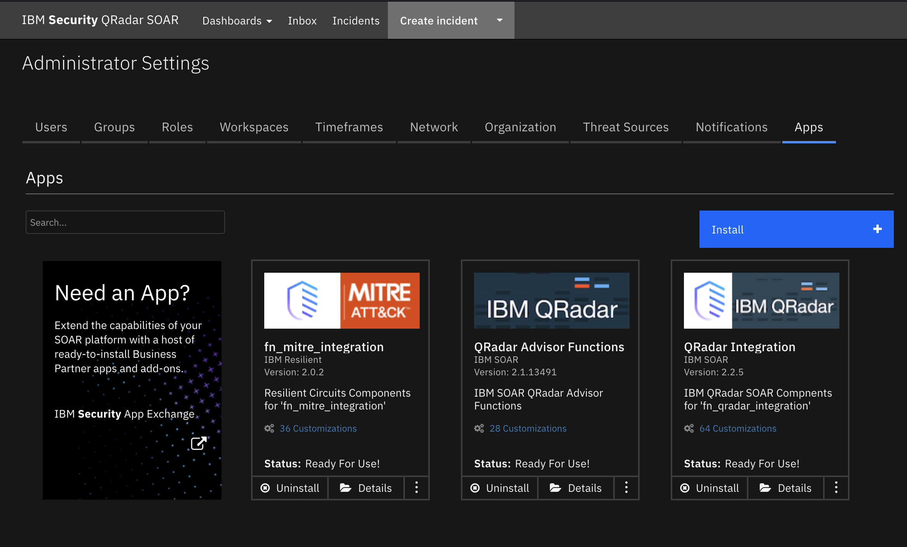
Import#
First ensure that the three above integration packages have been installed. Download the res_qraw_mitre package. Unzip it if necessary(tar -xvf res_qraw_mitre.tar). In the QRadar SOAR UI, go to Administrator Settings->Organization->Migrate Settings->Import->Import Settings and select the qraw_mitre.res file downloaded above. 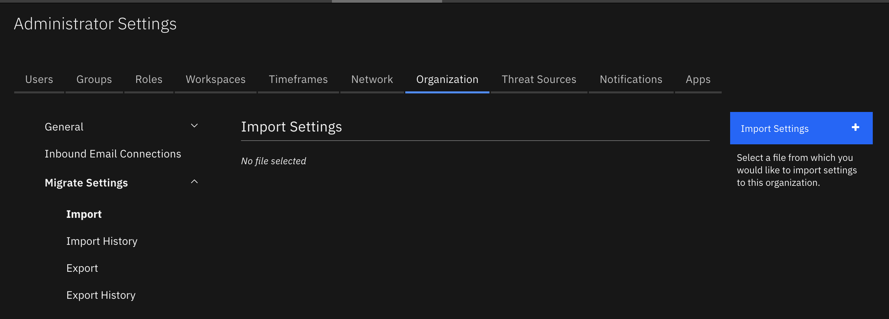
Usage#
Once the resource file is successfully imported, the workflows included in the file are ready for use.
Example of QRadar Advisor Offense Analysis with MITRE#
This workflow invokes two functions from two integration packages. 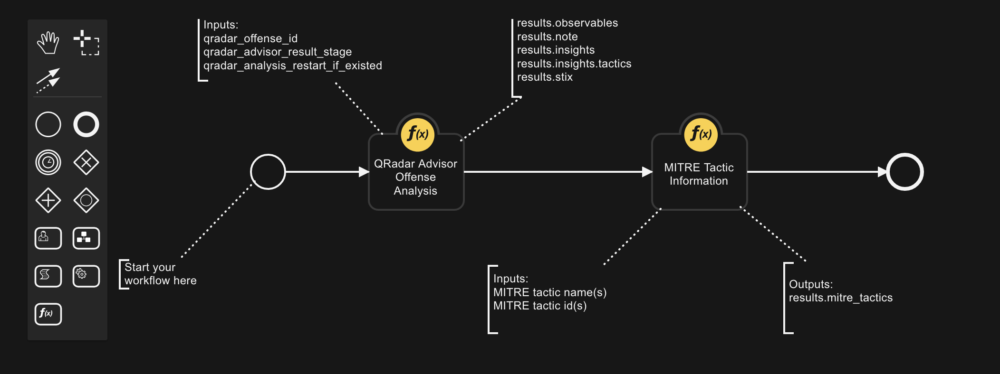
Inputs Qradar Advisor Offense Analysis:
Name |
Type |
Required |
Example |
Tooltip |
|---|---|---|---|---|
|
|
Yes |
|
QRadar Offense ID |
|
|
No |
|
stage1(Local), stage2(Watson enriched), stage3(Expanded local context) |
|
|
No |
|
restart the analysis if there is an existing result |
Outputs Qradar Advisor Offense Analysis:
NOTE: This example might be in JSON format, but results is a Python Dictionary on the SOAR platform.
results = {
"insights": {
"high_value_assets": [],
"high_value_users": [],
"insights": "Watson has analyzed this offense and a total of three observables. The reasoning process has not found any additional indicators that are related to this offense. No data points were found to be linked with the offense. One indicator was related to suspicious activity, and all indicators were active. In particular, one IP address has been found, which is known to be suspicious or malicious.",
"is_stage3_pending": false,
"malware_families": [],
"related_investigations": [
{
"analysis_time": null,
"concern_score": null,
"id": 1,
"is_search": true,
"priority": null,
"source": null,
"type": "Investigations"
}
],
"risky_users": [],
"stage3_insights": "",
"start_time": 1659629011957,
"stop_time": 1659636230480,
"tactics": [
{
"confidence": 60,
"data_sources": [
"xfe"
],
"event_count": 206,
"flow_count": 0,
"id": "TA0011",
"nodes": [
{
"is_internal": false,
"label": "89.223.26.52",
"type": "IpAddress"
}
],
"rules": [],
"tactic_id": "Command and Control",
"techniques": []
}
],
"threat_actors": [],
"watched_users": []
},
"note": "\u003cul\u003e\u003cli\u003e\u003cimg src=\"https://raw.githubusercontent.com/freetaxii/stix2-graphics/master/icons/png/stix2-meta-icons-png/identity-square-dark-300-dpi.png\" alt=\"identity\" style=\"width:20px; height:20px\"/\u003e userD\u003c/li\u003e\u003cul style=\"list-style-type:none\"\u003e\u003cli\u003e\u003cimg src=\"https://raw.githubusercontent.com/freetaxii/stix2-graphics/master/icons/png/stix2-sco-network-address-icons-png/ipv4-addr-square-dark-300-dpi.png\" alt=\"ipv4-addr\" style=\"width:20px; height:20px\"/\u003e 192.168.0.17\u003c/li\u003e\u003c/ul\u003e\u003c/ul\u003e\u003cul\u003e\u003cli\u003e\u003cimg src=\"https://raw.githubusercontent.com/freetaxii/stix2-graphics/master/icons/png/stix2-sco-network-address-icons-png/ipv4-addr-square-dark-300-dpi.png\" alt=\"ipv4-addr\" style=\"width:20px; height:20px\"/\u003e 89.223.26.52\u003c/li\u003e\u003cul style=\"list-style-type:none\"\u003e\u003cli\u003e\u003cimg src=\"https://raw.githubusercontent.com/freetaxii/stix2-graphics/master/icons/png/stix2-sco-network-address-icons-png/ipv4-addr-square-dark-300-dpi.png\" alt=\"ipv4-addr\" style=\"width:20px; height:20px\"/\u003e 192.168.0.17\u003cimg src=\"https://image.flaticon.com/icons/svg/282/282100.svg\" alt=\"link\" style=\"width:15px; height:15px\"/\u003e\u003c/li\u003e\u003cli\u003ex-mitre-tactic Command and Control\u003c/li\u003e\u003c/ul\u003e\u003c/ul\u003e\u003cul\u003e\u003cli\u003e\u003cimg src=\"https://raw.githubusercontent.com/freetaxii/stix2-graphics/master/icons/png/stix2-sco-network-address-icons-png/ipv4-addr-square-dark-300-dpi.png\" alt=\"ipv4-addr\" style=\"width:20px; height:20px\"/\u003e 193.184.16.214\u003c/li\u003e\u003cul style=\"list-style-type:none\"\u003e\u003cli\u003e\u003cimg src=\"https://raw.githubusercontent.com/freetaxii/stix2-graphics/master/icons/png/stix2-sco-network-address-icons-png/ipv4-addr-square-dark-300-dpi.png\" alt=\"ipv4-addr\" style=\"width:20px; height:20px\"/\u003e 192.168.0.17\u003cimg src=\"https://image.flaticon.com/icons/svg/282/282100.svg\" alt=\"link\" style=\"width:15px; height:15px\"/\u003e\u003c/li\u003e\u003c/ul\u003e\u003c/ul\u003e\u003cp\u003eThere are 5 objects and 2 links.\u003c/p\u003e",
"observables": [
{
"description": "userD",
"relevance": "very-high",
"toxicity": "very-low",
"type": "identity"
},
{
"description": "89.223.26.52",
"relevance": "medium",
"toxicity": "high",
"type": "ipv4-addr"
},
{
"description": "192.168.0.17",
"relevance": "medium",
"toxicity": "very-low",
"type": "ipv4-addr"
},
{
"description": "193.184.16.214",
"relevance": "medium",
"toxicity": "very-low",
"type": "ipv4-addr"
},
{
"description": "Command and Control",
"relevance": "",
"toxicity": "",
"type": "x-mitre-tactic"
}
],
"stix": {
"id": "bundle--9813614d-e715-4ad4-a4bd-7cf204190449",
"objects": [
{
"created": "2022-08-04T17:08:32.000Z",
"id": "identity--2f4ac158-751e-42de-bf88-2a02fe6a5840",
"identity_class": "individual",
"modified": "2022-08-04T17:08:32.000Z",
"name": "userD",
"type": "identity",
"x_ibm_security_relevance": "very-high",
"x_ibm_security_toxicity": "very-low"
}
],
"spec_version": "2.0",
"type": "bundle"
}
}
Example Qradar Advisor Offense Analysis Pre-Process Script:
#
# This sample workflow uses the custom field (qradar_id) to perform
# an offense analysis in QRadar Advisor
#
inputs.qradar_offense_id = incident.properties.qradar_id
Example Qradar Advisor Offense Analysis Post-Process Script:
Name Type Required Example Tooltip No MITRE Tactic Name No MITRE Tacic IdInputs MITRE Tactic Information:
mitre_tactic_nametextInitial Accessmitre_tactic_idtextTA0001
Outputs MITRE Tactic Information:
NOTE: This example might be in JSON format, but results is a Python Dictionary on the SOAR platform.
results = {
'version': '1.0',
'success': True,
'reason': None,
'content': {
"mitre_tactics": [
{
"name": String,
"id": String,
"ref": "String",
"collection": "String",
"mitre_techniques": [
{
"name": "String",
"description": "String",
"external_references": [{"url": "String"}],
"x_mitre_detection": "String",
"id": "String",
"collection": "String"
}
]
}
]
},
'inputs': {'mitre_tactic_id': None,
'mitre_tactic_name': 'Initial Access, Execution, Credential Access'},
'metrics': {'version': '1.0',
'package': 'fn-mitre-integration', 'package_version': '2.0.2',
'host': 'MacBook-Pro.local',
'execution_time_ms': 114275,
'timestamp': '2022-09-26 12:56:58'
}
}
Example MITRE Tactic Information Pre-Process Script:
**NOTE:** this example may be in JSON format, yet on the SOAR Platform `results` will be a Python Dictionaryinsights = workflow.properties.qraw_offense_insights.insights
tactics = insights["tactics"]
mitre_tactic_names = []
if tactics is not None:
for tactic in tactics:
#
# Note, even though QRAW calls it tactic_id, it is more a tactic name
#
mitre_tactic_names.append(tactic["tactic_id"])
#
# QRadar Advisor might return more than one tactics for a given offense. Include them inputs
# a comma separated string
#
inputs.mitre_tactic_name = ", ".join(mitre_tactic_names)
Example MITRE Tactic Information Post-Process Script:
""" Example of data returned in ResultPayload's content
{
"mitre_tactics": [
{
"name": String,
"id": String,
"ref": "String",
"collection": "String",
"mitre_techniques": [
{
"name": "String",
"description": "String",
"external_references": [{"url": "String"}],
"x_mitre_detection": "String",
"id": "String",
"collection": "String"
}
]
}
]
}
"""
# Read result from QRAW to get confidence information
insights = workflow.properties.qraw_offense_insights.insights
mitre_tactics = insights["tactics"]
tactic_confidence = {}
if mitre_tactics is not None:
for tactic in mitre_tactics:
tactic_confidence[tactic["tactic_id"]] = tactic["confidence"]
tactics = results.content["mitre_tactics"]
for tactic in tactics:
#
# MITRE ATTACK of Incident Datatable
#
tactic_row = incident.addRow("mitre_attack_of_incident")
tactic_row["collection"] = tactic["collection"]
tactic_row["attack_tactic"] = tactic["name"]
tactic_row["tactic_code"] = tactic["id"]
url_html = '<a href="' + tactic["ref"] + '">' + tactic["ref"] + '</a><br>'
tactic_row["reference"] = helper.createRichText(url_html)
tactic_row["confidence"] = str(tactic_confidence.get(tactic["name"], ""))
#
# MITRE ATT&CK techniques Datatable
#
techs = tactic["mitre_techniques"]
for att_tech in techs:
tech_row = incident.addRow("mitre_attack_techniques")
tech_row["collection"] = tactic["collection"]
tech_row["tactic"] = tactic["name"]
tech_row["technique_name"] = att_tech["name"]
tech_row["technique_description"] = helper.createRichText(att_tech["description"])
refs = att_tech["external_references"]
ref_html = ""
for ref in refs:
url = ref["url"]
https_str = "https://"
http_str = "http://"
start_pos = url.find(https_str)
if start_pos != -1:
start_pos = start_pos + len(https_str)
else:
# try http://
start_pos = url.find(http_str)
if start_pos != -1:
start_pos = start_pos + len(http_str)
else:
start_pos = 0
end_pos = url.find('/', start_pos)
if end_pos == 0:
# We don't know how to extract
display_str = url
elif end_pos == -1:
display_str = url[start_pos:]
else:
display_str = url[start_pos:end_pos]
ref_html = ref_html + '<a href="' + ref["url"] + '">' + display_str + '</a><br>'
tech_row["references"] = helper.createRichText(ref_html)
tech_row["detection"] = helper.createRichText(att_tech["x_mitre_detection"])
tech_row["technique_id"] = att_tech["id"]
“QRadar Advisor Offense Analysis” is a function from the QRadar Advisor integration, and “MITRE Tactic Information” is a function from the MITRE integration. The data flow is shown below 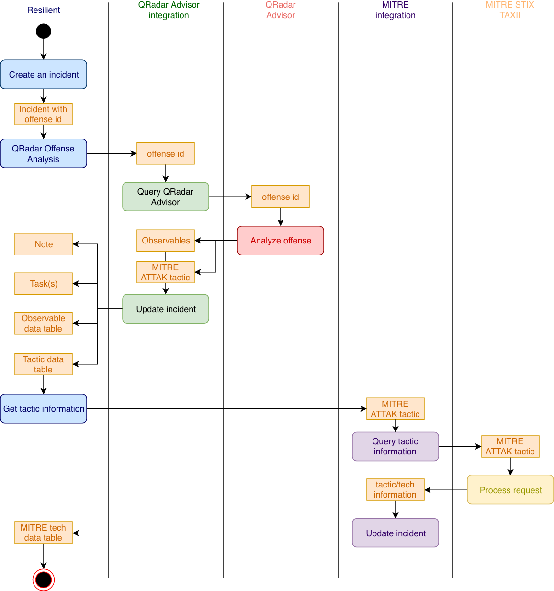 Here, a user starts from an incident with a QRadar offense id. In the following example, the incident is escalated from QRadar offense 3. 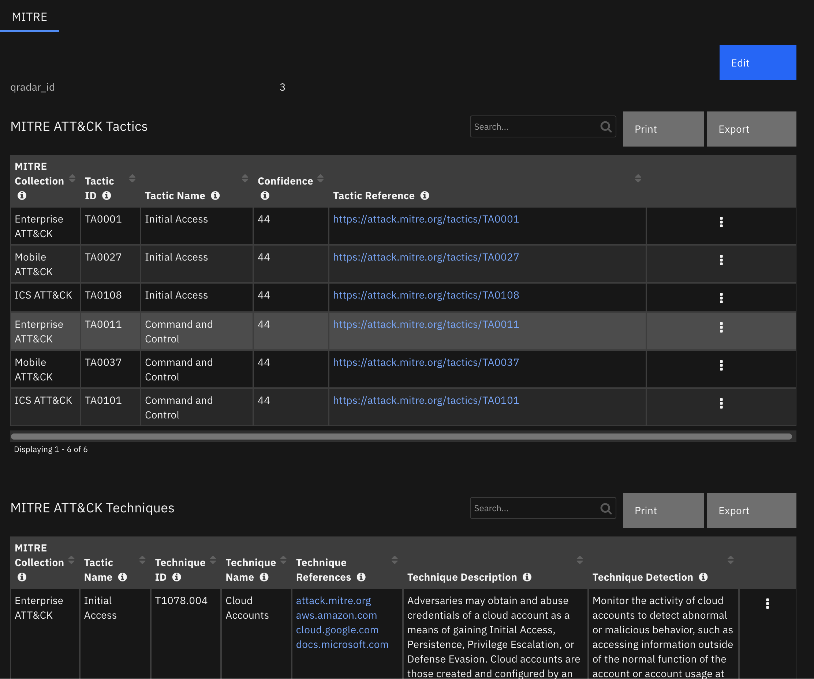 Note for convenience, a tab was created to hold all the related information here. To do analysis for the related offense, select the incident rule from the Actions->”QRadar Advisor Offense Analysis with MITRE” menu, to start this workflow. The first function, “QRadar Advisor Offense Analysis”, is called to get the analysis and insights of the offense from QRadar Advisor. The insights contains MITRE ATT&CK tactic information, shown in the “MITRE ATT&CK Tactics” data table. In this example, QRadar Advisor returns a tactics called “Initial Access” and “Command and Control” together with a confidence value of 44 (out of 100).
With this information, the second function “MITRE Tactic Information” is called. This function retrieves the following information from the MITRE STIX TAXII server:
Tactic ID
Reference link to tactic
Techniques related to this tactic The information is populated into the “MITRE ATT&CK Techniques” data table.
Note that from the “MITRE ATT&CK Techniques” data table, the user can easily create a task for a selected technique, by clicking a data table menu item. 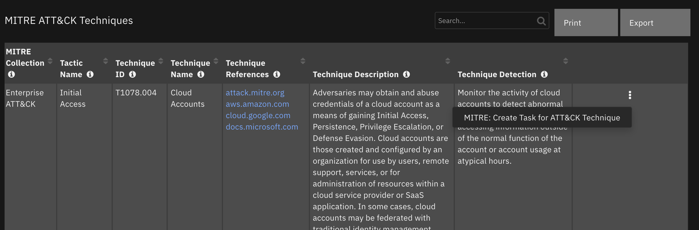 A new task is created with description, detection, and mitigation for the selected technique. 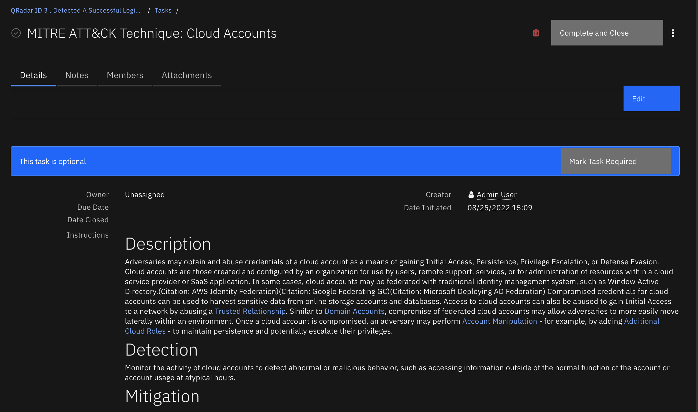
Example of mapping QRadar rule to tactic#
This workflow also contains two functions. 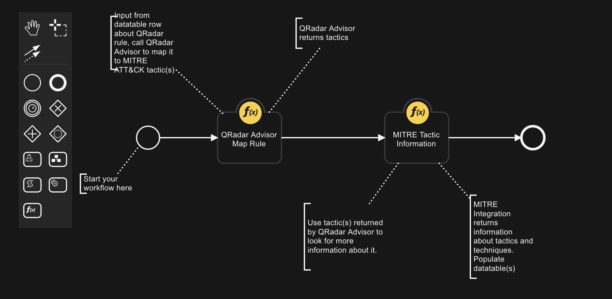
Inputs Qradar Advisor Map Rule:
Name |
Type |
Required |
Example |
Tooltip |
|---|---|---|---|---|
|
|
Yes |
|
Name of QRadar rule |
Outputs QRadar Advisor Map Rule:
NOTE: This example might be in JSON format, but
resultsis a Python Dictionary on the SOAR platform.
results = {
"tactics": {
"has_ibm_default": true,
"id": "c0dfacf7-235e-416c-9b2b-c250ef8f3919",
"last_updated": 1607611408002,
"mapping": {
"Initial Access": {
"confidence": "high",
"enabled": true,
"ibm_default": true,
"id": "TA0001",
"techniques": {
"Valid Accounts": {
"confidence": "high",
"enabled": true,
"id": "T1078"
}
},
"user_override": false
}
},
"min-mitre-version": 7
}
}
Example Qradar Advisor Map Rule Pre-Process Script:
inputs.qradar_rule_name = row.source
Example Qradar Advisor Map Rule Post-Process Script:
Name Type Required Example Tooltip No MITRE Tactic ID No MITRE Tactic NameInputs MITRE Tactics Information:
mitre_tactid_idtextTA0001mitre_tactid_nametextInitial Access
Outputs MITRE Tactics Information:
Example MITRE Tactic Information Pre-Process Script:
"""
Sample data from QRaw:
{
u'id': u'SYSTEM-1458',
u'has_ibm_default': True,
u'mapping': {
u'Privilege Escalation': {
u'user_override': False,
u'confidence': u'high',
u'ibm_default': True,
u'enabled': True,
u'techniques': {}
},
u'Execution': {
u'user_override': False,
u'confidence': u'high',
u'ibm_default': True,
u'enabled': True,
u'techniques': {}
},
u'Initial Access': {
u'user_override': False,
u'confidence': u'high',
u'ibm_default': True,
u'enabled': True,
u'techniques': {}
}
}
}
"""
tactics = workflow.properties.qraw_rule_map.tactics
mapping = tactics["mapping"]
att_tactics = ", ".join(mapping.keys())
inputs.mitre_tactic_name = att_tactics
Example MITRE Tactic Information Post-Process Script:
""" Example of data returned in ResultPayload's content
{
"mitre_tactics": [
{
"name": String,
"id": String,
"ref": "String",
"collection": "String",
"mitre_techniques": [
{
"name": "String",
"description": "String",
"external_references": [{"url": "String"}],
"x_mitre_detection": "String",
"id": "String",
"collection": "String"
}
]
}
]
}
"""
# Read result from QRAW to get confidence information
mapping = workflow.properties.qraw_rule_map.tactics["mapping"]
tactic_names = mapping.keys()
tactic_confidence = {}
if tactic_names is not None:
for t_name in tactic_names:
tactic_confidence[t_name] = mapping[t_name]["confidence"]
tactics = results.content["mitre_tactics"]
for tactic in tactics:
#
# MITRE ATTACK of Incident Datatable
#
tactic_row = incident.addRow("mitre_attack_of_incident")
tactic_row["collection"] = tactic["collection"]
tactic_row["attack_tactic"] = tactic["name"]
tactic_row["tactic_code"] = tactic["id"]
url_html = '<a href="' + tactic["ref"] + '">' + tactic["ref"] + '</a><br>'
tactic_row["reference"] = helper.createRichText(url_html)
tactic_row["confidence"] = str(tactic_confidence.get(tactic["name"], ""))
#
# MITRE ATT&CK techniques Datatable
#
techs = tactic["mitre_techniques"]
for att_tech in techs:
tech_row = incident.addRow("mitre_attack_techniques")
tech_row["collection"] = tactic["collection"]
tech_row["tactic"] = tactic["name"]
tech_row["technique_name"] = att_tech["name"]
tech_row["technique_description"] = helper.createRichText(att_tech["description"])
refs = att_tech["external_references"]
ref_html = ""
for ref in refs:
url = ref["url"]
https_str = "https://"
http_str = "http://"
start_pos = url.find(https_str)
if start_pos != -1:
start_pos = start_pos + len(https_str)
else:
# try http://
start_pos = url.find(http_str)
if start_pos != -1:
start_pos = start_pos + len(http_str)
else:
start_pos = 0
end_pos = url.find('/', start_pos)
if end_pos == 0:
# We don't know how to extract
display_str = url
elif end_pos == -1:
display_str = url[start_pos:]
else:
display_str = url[start_pos:end_pos]
ref_html = ref_html + '<a href="' + ref["url"] + '">' + display_str + '</a><br>'
tech_row["references"] = helper.createRichText(ref_html)
tech_row["detection"] = helper.createRichText(att_tech["x_mitre_detection"])
tech_row["technique_id"] = att_tech["id"]
“QRadar Advisor Map Rule” is a function from the QRadar Advisor integration, and “MITRE Tactic Information” is a function from the MITRE integration.
This workflow can be used together with the “Example of finding all QRadar reference sets for artifact” workflow from the QRadar integration 2.0. These two workflows can make a complete use case.
This use case starts with an artifact. The dataflow is shown below. 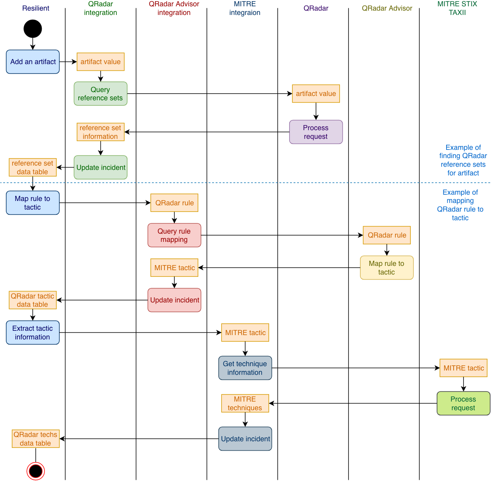
In this example, an IP address (193.184.16.214) was added to an incident as an artifact. The user can then select the rule, “Find All QRadar Reference Sets”. It is a rule included in QRadar integration 2.0. 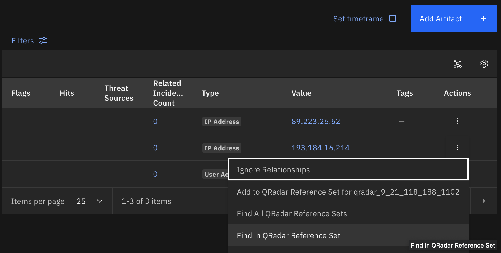 The result is shown in the “QRadar Reference Set” data table. Note that the “Source” column (if not empty) shows the QRadar rule that added this IP into the reference set. In this example, a rule called “EC: Personal Data Transferred to Third Countries/Regions” monitors source IPs that contact external malicious sites, and logs the source IPs into a Reference Set called “EC Compromised Hosts”. This IP address (193.184.16.214) is in that Reference Set.
Once the “QRadar Reference Set” data table is populated with data, user can select “Map rule to MITRE tactic”. 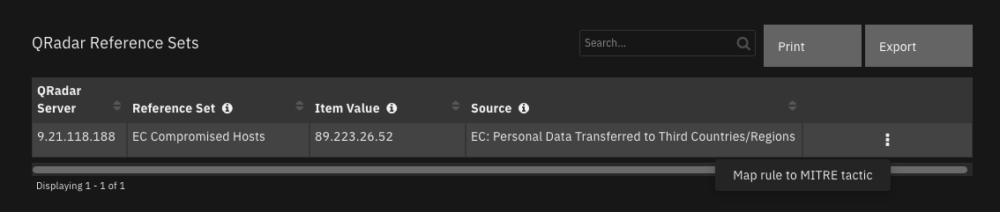 This manual item invokes the “Example of mapping QRadar rule to tactic” workflow of this package.
The workflow first call “QRadar Advisor Map Rule” function to map the rule to MITRE ATT&CK tactic.
In this example, QRadar Advisor maps the rule “EC: Personal Data Transferred to Third Countries/Regions” into a MITRE ATT&CK tactic called “Initial Access”.
With this tactic information, the workflow makes a second call to the MITRE integration function, “MITRE Tactic Information” to get all the MITRE ATT&CK techniques related to this tactic. Similar to the first workflow, technique information is shown in the “MITRE ATT&CK Techniques” data table. From here, the user can create tasks for selected techniques.
Uninstall#
Manually delete the following:
Rules
“Map rule to MITRE tactic”
“QRadar Advisor Offense Analysis with MITRE”
Workflows
Example of QRadar Advisor Offense Analysis with MITRE
Example of mapping QRadar rule to tactic